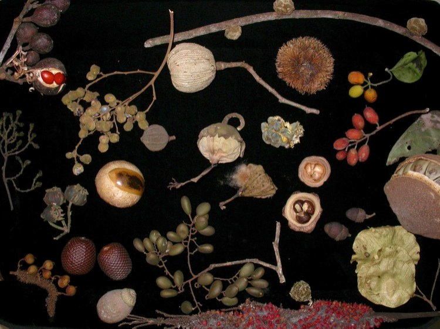
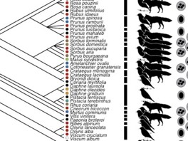
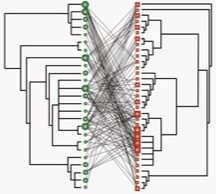
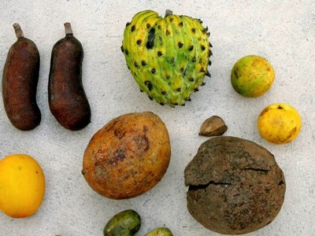
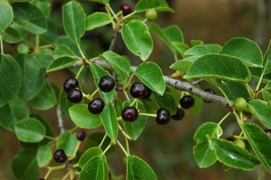
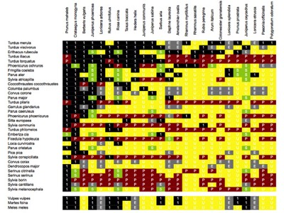
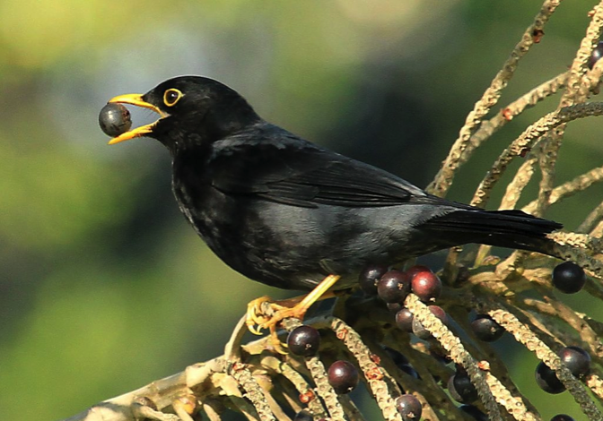

GitHub. We maintain a GitHub Lab-repository and Pedro’s GitHub repository for code and projects, as well as GitHub pages explaining in detail different aspects of specific analyses and data resources. In addition to code, text, and Supplementary Materials associated with specific projects and manuscripts we maintain the main datasets, and specific ones, e.g., FRUBASE, network data (now in maintenance), etc. Please read the README files for each repository.
GitHub. We maintain a GitHub Lab-repository and Pedro’s GitHub repository for code and projects, as well as GitHub pages explaining in detail different aspects of specific analyses and data resources. In addition to code, text, and Supplementary Materials associated with specific projects and manuscripts we maintain the main datasets, and specific ones, e.g., FRUBASE, network data (now in maintenance), etc. Please read the README files for each repository.

 The FRUBASE database. This is the page for the FRUBASE database, a huge dataset of fleshy fruit traits compiled from bibliographic references and my own work. Data are provided for more than 1000 plant species from all around the world. The dataset is available in the Dryad repository. Updated versions of the file as well as supporting code and information are in the Github repository.
The FRUBASE database. This is the page for the FRUBASE database, a huge dataset of fleshy fruit traits compiled from bibliographic references and my own work. Data are provided for more than 1000 plant species from all around the world. The dataset is available in the Dryad repository. Updated versions of the file as well as supporting code and information are in the Github repository.

 Dataset accompanying Valido A, Schaefer HM, Jordano P (2011) Colour, design, and reward: phenotypic integration of fleshy fruit displays. Journal of Evolutionary Biology 24(4): 751–760. doi:10.1111/j.1420-9101.2010.02206.x. Table_S1_Valido etal_Fruit_Integration_DataSet View File Details. Dataset of fruit variables (morphology, pulp nutrient, and colour) (see also Appendix S1 for literature sources) and the full metadata are also in the Dryad repository.
Dataset accompanying Valido A, Schaefer HM, Jordano P (2011) Colour, design, and reward: phenotypic integration of fleshy fruit displays. Journal of Evolutionary Biology 24(4): 751–760. doi:10.1111/j.1420-9101.2010.02206.x. Table_S1_Valido etal_Fruit_Integration_DataSet View File Details. Dataset of fruit variables (morphology, pulp nutrient, and colour) (see also Appendix S1 for literature sources) and the full metadata are also in the Dryad repository.


 The Megafauna fruits dataset. Dataset accompanying Guimarães Jr, P., Galetti, M. and Jordano, P. 2008. Seed dispersal anachronisms: rethinking the fruits extinct megafauna ate. PLOS One, 3(3): e1745. A photo gallery of the megafauna fruits is here. Data available in the Dryad repository. Updated versions of the file as well as supporting code and information are in the Github repository.
The Megafauna fruits dataset. Dataset accompanying Guimarães Jr, P., Galetti, M. and Jordano, P. 2008. Seed dispersal anachronisms: rethinking the fruits extinct megafauna ate. PLOS One, 3(3): e1745. A photo gallery of the megafauna fruits is here. Data available in the Dryad repository. Updated versions of the file as well as supporting code and information are in the Github repository.

General methods. Field work. Prunus mahaleb seed dispersal ecology. This document describes our general approach to the study of seed dispersal ecology with Prunus mahaleb. It includes a description of both field methods and lab methods.
Lab methods and protocols. This document describes the specific lab protocols. Updated versions of the file as well as supporting code and information are in the Github repository.

Dataset accompanying Jordano, Bascompte and Olesen (2003), Ecology Letters 6: 133-140. This is Appendix 1 of the paper, with a summary of the model fits for the different networks examined.

 Dataset accompanying Galetti, M., Guevara, R., Côrtes, M.C., Fadini, R., Matter, Von, S., Leite, A.B., Labecca, F., Ribeiro, T., Carvalho, C.S., Collevatti, R.G., Pires, M.M., Guimaraes, P.R., Brancalion, P.H., Ribeiro, M.C. & Jordano, P. (2013) Functional extinction of birds drives rapid evolutionary changes in seed size. Science, 340, 1086–1090.
Dataset accompanying Galetti, M., Guevara, R., Côrtes, M.C., Fadini, R., Matter, Von, S., Leite, A.B., Labecca, F., Ribeiro, T., Carvalho, C.S., Collevatti, R.G., Pires, M.M., Guimaraes, P.R., Brancalion, P.H., Ribeiro, M.C. & Jordano, P. (2013) Functional extinction of birds drives rapid evolutionary changes in seed size. Science, 340, 1086–1090.